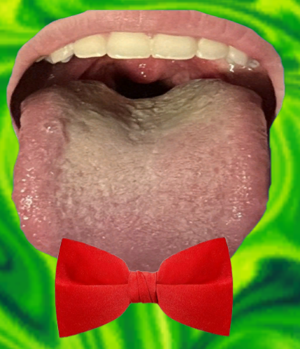

Unity • Strategy / Card Game
Mr. Mondomouth's Malnutritious Matcher
Create the grossest food combinations you could imagine against an AI-programmed CPU in this card game! Using search algorithms including a heuristic search and finding disjoint pairs, Mr. Mondomouth will use the same strategies as a human player, making him a difficult challenge to beat.

About the Project
Compete against AI CPU Mr. Mondomouth in making the most disgusting food pairs you wouldn't imagine in this fun little card game!
Team: Dylan Abry (Lead Designer and Developer), Amina Guliyeva, Anthony Younan, Ivan Zheng, George Papanyan (Documentation)
Gameplay & Media
"Mr. Mondomouth's Malnutritious Matcher" Gameplay
Gameplay footage of using the draw, discard and match systems in Malnutritious Matcher.

Mr. Mondomouth Character
The Mr. Mondomouth character was made with a cropped image of my mouth and a red bow tie attached to it. To emphasize the character's lack of sanitation, I waited until the end of the day to get a pic before brushing my teeth so the mouth could look as unclean as possible!
What I Built
- Card Matching and Relationship System: Developed a custom card relationship system for a 24-card deck in which cards can have multiple valid matching relationships rather than belonging to only one predefined pair. The system validates selected cards against these relationships and updates the player's hand and game state whenever a valid match is completed.
- Mr. Mondomouth Decision-Making AI: Created rule-based decision logic for Mr. Mondomouth that evaluates his current hand and available actions during each turn. The CPU checks its cards for valid relationships and uses the current state of its hand to determine whether to complete a match, draw additional cards, or perform another available action instead of relying entirely on random choices.
- Hand and Draw Management System: Implemented dynamic hand management for both the player and CPU, including a six-card hand limit and the ability to draw up to three cards during a turn. The system adds and removes cards as matches, draws, and discards occur while enforcing hand-size and draw restrictions throughout gameplay.
- Turn and Game State Management: Built the central gameplay loop responsible for switching between player and CPU turns and coordinating card selections, completed matches, draws, steals, and hand updates. State checks ensure that actions occur only during the appropriate turn and that control passes correctly once a player's available actions have been completed.
- Probability-Based CPU Draw System: Developed a probability-based system that helps determine whether Mr. Mondomouth should continue drawing cards. The CPU considers the likelihood of obtaining a useful card rather than automatically using every available draw, allowing its behavior to respond to the current hand and introduce calculated risk into its decision-making.
Technical Challenges
- Managing Nontraditional Card Relationships: Unlike a traditional matching game where every card belongs to one fixed pair, Malnutritious Matcher allows individual cards to have multiple valid relationships. This required separating a card's identity from its possible matches and validating selections against the relationship rules rather than relying on simple equality checks. The system also needed to remove and update the correct cards without invalidating other potential relationships remaining in each hand.
- Balancing Mr. Mondomouth's Draw Decision Logic: Mr. Mondomouth needed to make useful decisions without having access to information that should be hidden from the player. I used the CPU's current hand and probability-based decision logic to determine when drawing another card was worthwhile while respecting the three-draw and six-card hand limits. The challenge was creating behavior that could take calculated risks and pursue matches without reducing the opponent to either completely random actions or unfair perfect knowledge.